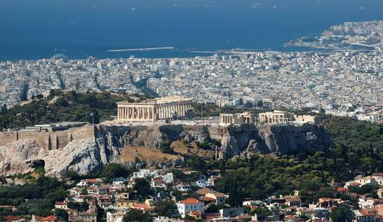
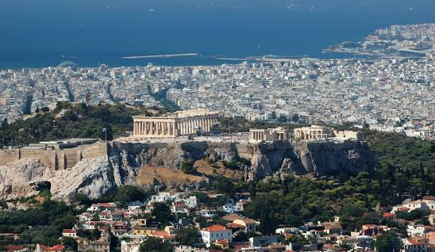
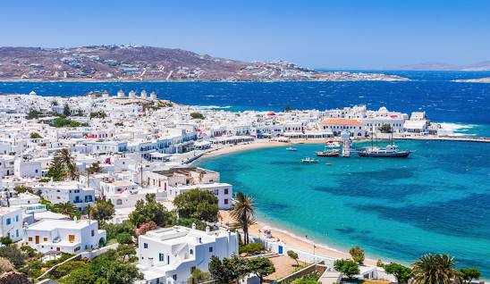
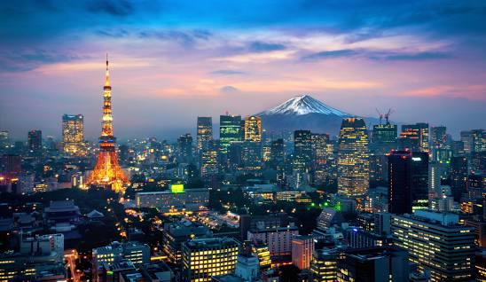
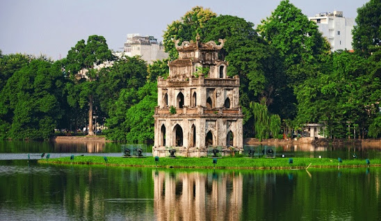
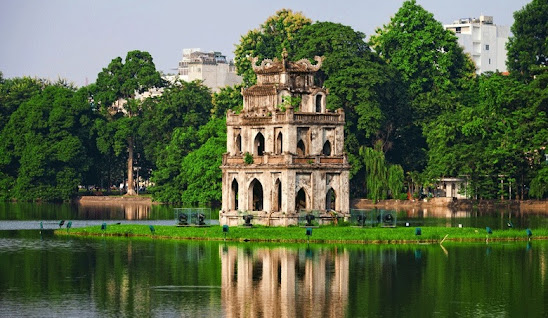

My Favorite V Destinations

Santorini
 An island in the southern Aegean Sea in Greece
17 430 Inhabitants
Latitude & Longitude: 36°24′54″N 25°25′57″E / 36.415, 25.4325
Santorini is a beautiful island. The main atraction it's their volcano which formed the island thounsands years ago. The contrast between
the volcanic scenery and the white and blue well-designed houses is astonishing.

An island in the southern Aegean Sea in Greece
17 430 Inhabitants
Latitude & Longitude: 36°24′54″N 25°25′57″E / 36.415, 25.4325
Santorini is a beautiful island. The main atraction it's their volcano which formed the island thounsands years ago. The contrast between
the volcanic scenery and the white and blue well-designed houses is astonishing.

Athens
The Capital of Grecee located in the southern part of the country
1 500 000 Inhabitants
Latitude & Longitude: 37°59′03″N 23°43′41″E
One of the world's oldest cities. The Parthenon, the Acropolis and various ruins can be found in the city. The city also hosts a lovely nightlife that is attractive for
people from inside and outside the country.

Mykonos
It is an island located in the southeast of Grecee
10,134 Inhabitants
Latitude & Longitude: 37°27′00″N 25°20′00″E / 37.45, 25.33
Mykonos is Known for it's stunning beaches, vibrant nightlife, and charming whitebuildings with blue accents

Tokio
 Capital City of Japan located in the eastern coast
14 215 906 Inhabitants
Latitude & Longitude: 35°41′22″N 139°41′30″E
It's known for its iconic landmarks such as the historic Asakusa Temple and modern Tokyo Skytree,
the bustling shopping districts of Shibuya and Ginza, and the serene beauty of the Imperial Palace Gardens.

Capital City of Japan located in the eastern coast
14 215 906 Inhabitants
Latitude & Longitude: 35°41′22″N 139°41′30″E
It's known for its iconic landmarks such as the historic Asakusa Temple and modern Tokyo Skytree,
the bustling shopping districts of Shibuya and Ginza, and the serene beauty of the Imperial Palace Gardens.

Hanói
 Capital City of Vietnam located in the northern part of the country.
6 699 600 Inhabitants
Latitude & Longitude: 21°01′28″N 105°50′28″E
A blend of ancient history and modern vitality.Is celebrated for its well-preserved historical architecture, including pagodas, temples, and colonial-era buildings.
<<
Capital City of Vietnam located in the northern part of the country.
6 699 600 Inhabitants
Latitude & Longitude: 21°01′28″N 105°50′28″E
A blend of ancient history and modern vitality.Is celebrated for its well-preserved historical architecture, including pagodas, temples, and colonial-era buildings.
<<